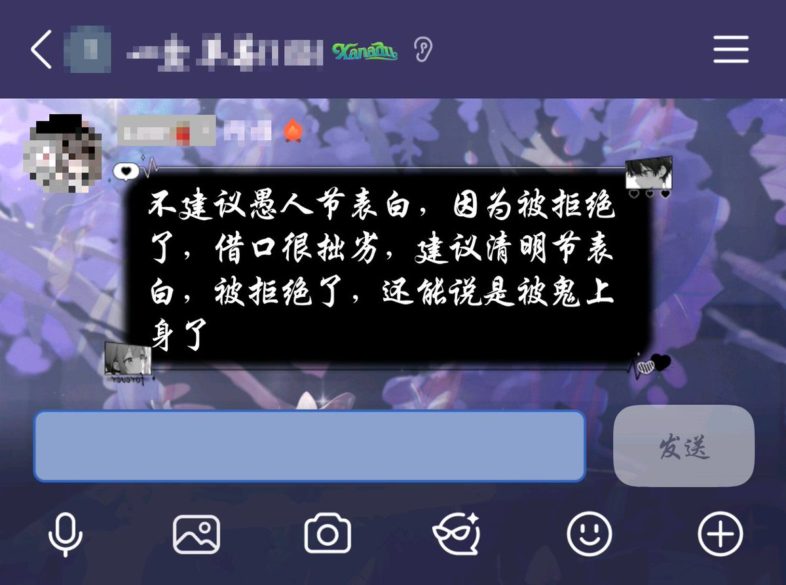

雪秋小可爱🍥
@XUEQIUxka
@wxb_NB 不建议愚人节表白，因为被拒绝了，借口很拙劣，建议清明节表白，被拒绝了，还能说是被鬼上身了

雪秋小可爱🍥
@XUEQIUxka
震撼首发 https://t.co/7hunSRYtCr
草莓走丢了
@wxb_NB
这周三将有多少男孩借着愚人节的幌子给我表白，又要有多少男孩用愚人节的借口来试探我？如果我现在公布我的恋情那会有多少人疯掉?又会有多少人走向天台 医院是否会人满为患?微博后台是否会完全瘫痪?是多少男孩心碎的夜晚? 我难以想象。抱歉，伤害男人的事我做不到。